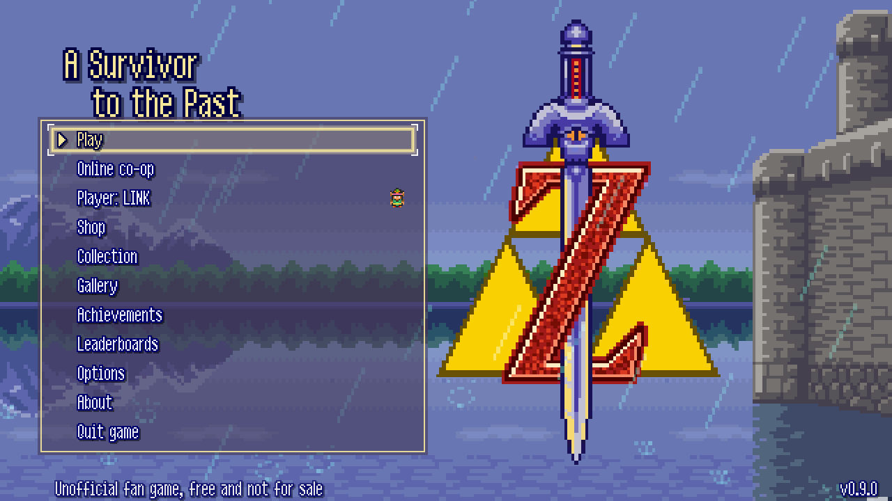
A survivors-like in the world of A Link to the Past: hold out against hordes of Hyrule's monsters.
Alpha 0.5.0 for Windows and the browser — Linux, macOS and Android later
What is it?
A Survivor to the Past is an unofficial fan game made for fun. It mixes the formula of survivors-like games (your weapons attack on their own, the waves never stop, every level offers new powers) with the sprites, music and sounds of The Legend of Zelda: A Link to the Past (SNES, 1991).
Move Link through ever-growing hordes, pick up rupees to level up, choose one upgrade out of three, open the chests dropped by elites and evolve your weapons into their legendary forms. Each stage lasts about ten minutes: a mid-boss arrives at 4:30, the final boss at 9:00, and beating it opens the way out. Between runs, spend your rupees on permanent upgrades.
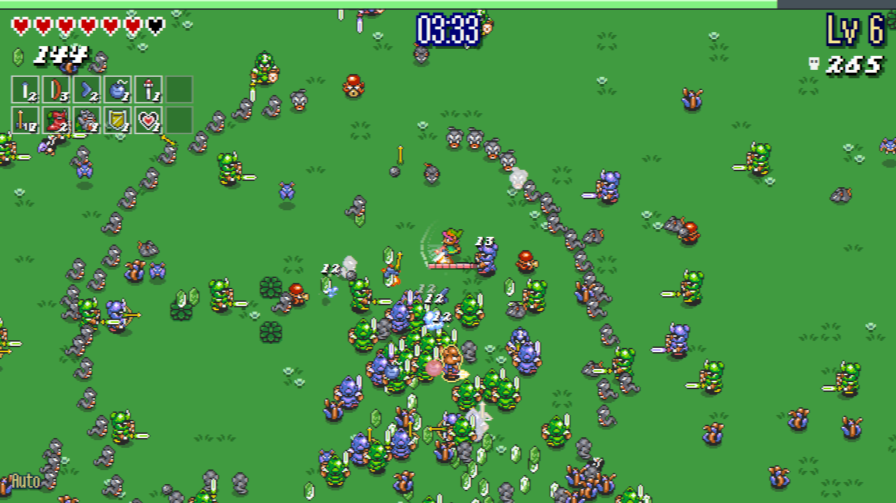
Features
- 6 stages unlocked one after the other — Hyrule Field, Lost Woods, Desert of Mystery, Frozen Lake, Pyramid of Power and the bonus Death Mountain — each with its own weather, music, mid-boss and final boss, up to Agahnim and Ganon
- 13 playable characters to unlock — Link, Minish Link, Capless Link, Sonic, Princess Zelda, NES Link, Four Swords Link (4 colors), the Links of Link's Awakening and Zelda II, Adult Link, Deku Link, Shy Guy and Shadow Link (defeat Ganon) — each with strengths, weaknesses and a starting weapon
- A rare Bob-omb that blows away every enemy on screen, and breakable scenery hiding rupees, hearts, fairies or the Ether medallion
- Random encounters: a wandering champion waits somewhere, an arrow shows the way — beat it for a blessing, a special weapon upgrade or a relic you keep if you win
- 12 weapons, each with an evolution, and 12 passive items — 6 weapon slots and 6 item slots, so every choice matters
- 17 enemy types from Hyrule, 7 bosses and elites that drop chests
- Progression between runs: the Kakariko shop (permanent upgrades), the Great Fairy's blessings, a relic won on each stage, 4 difficulties and Ganon's seals to earn more rupees
- Profile: bestiary, armory, statistics, and save export / import as a text code
- Automatic attacks, or manual aiming at any time — keyboard, mouse or gamepad, and every key can be remapped
- Original SNES graphics, music and sounds of A Link to the Past
- Retro video filters: SNES, CRT, Scanlines, Game Boy Advance, Game Boy, plus a 4:3 mode — and matching audio filters
- 7 languages: English, Français, Deutsch, Español, Italiano, Português, 日本語
- Home-made Rust engine (wgpu): thousands of enemies on screen, on Windows and in the browser
Screenshots
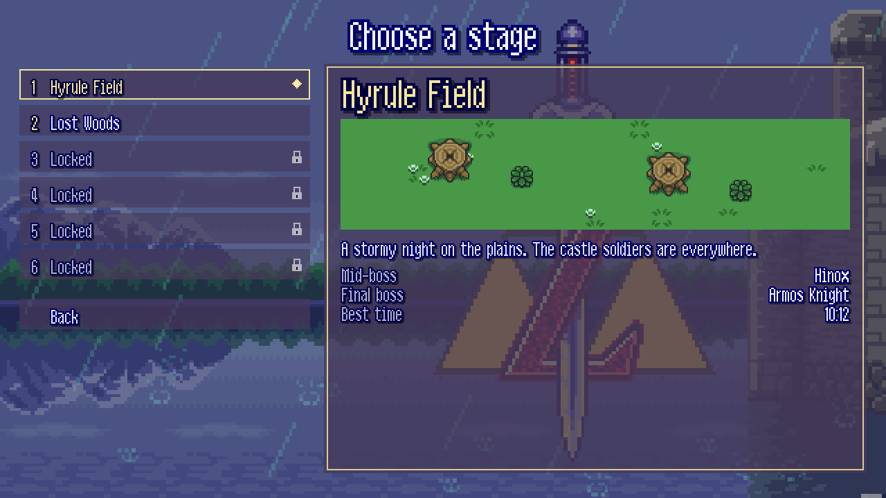
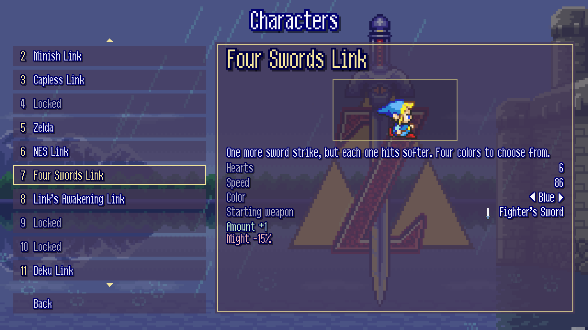
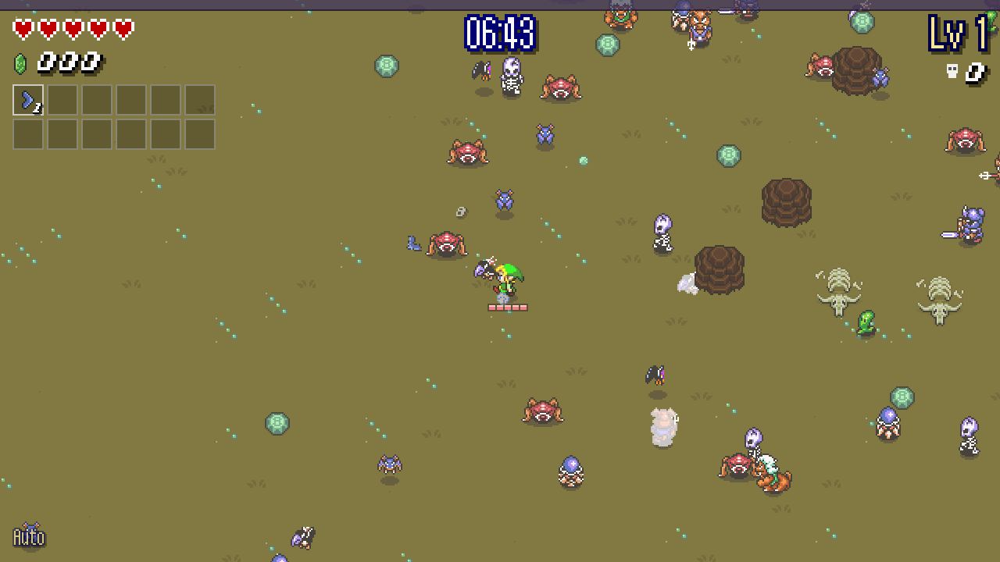
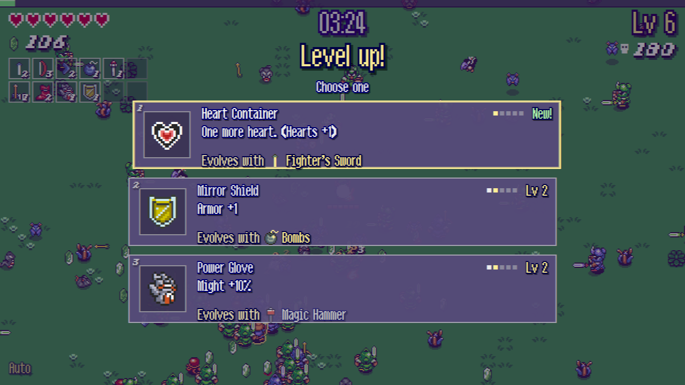
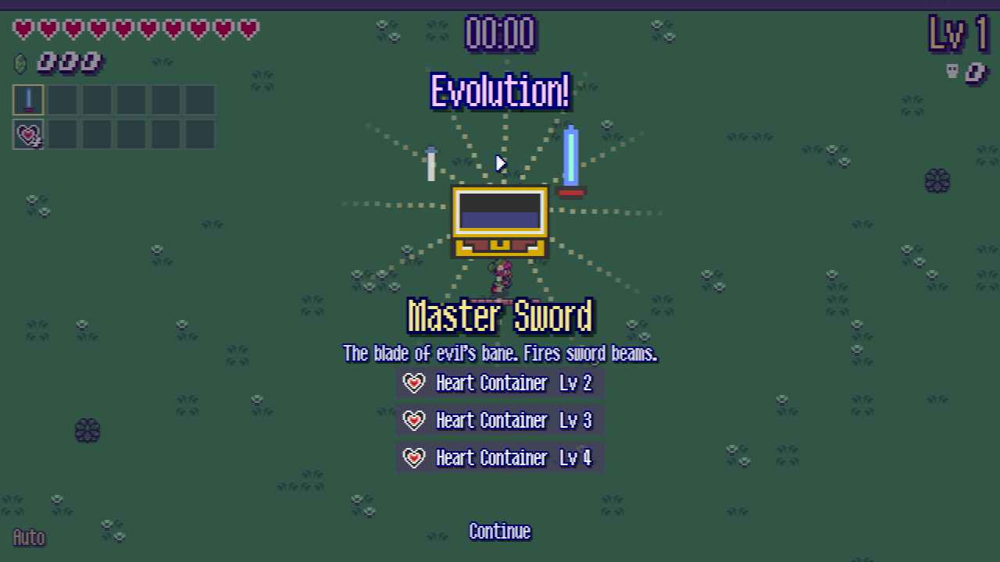
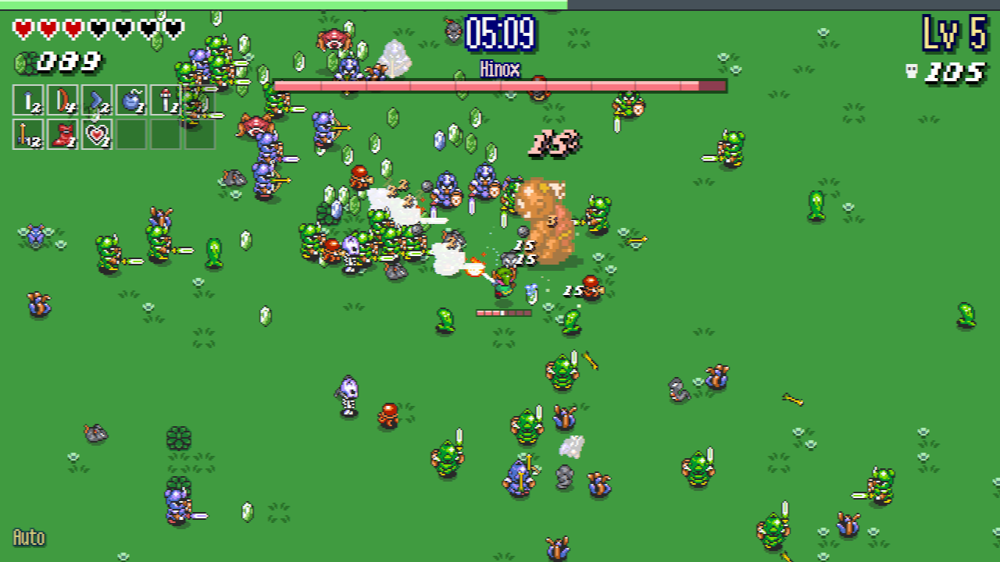
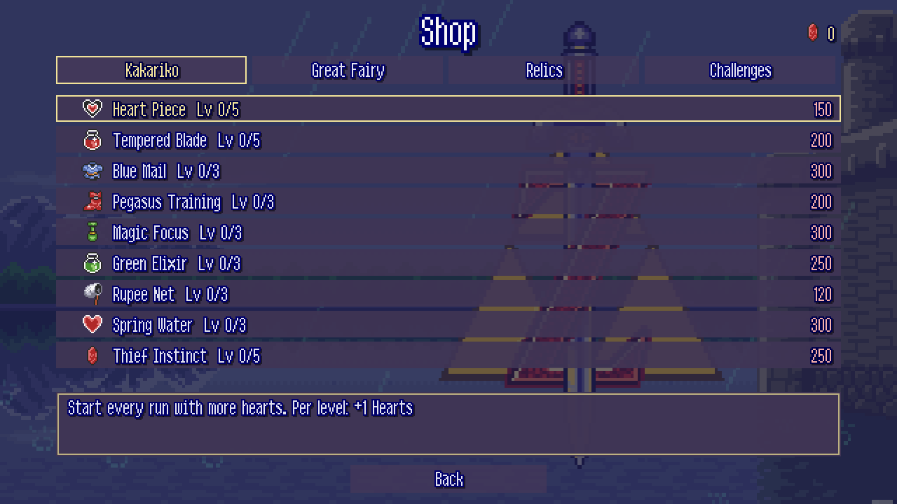
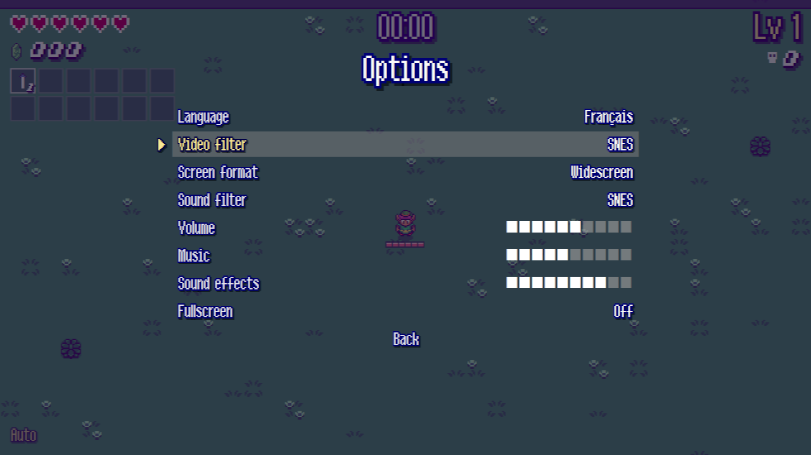
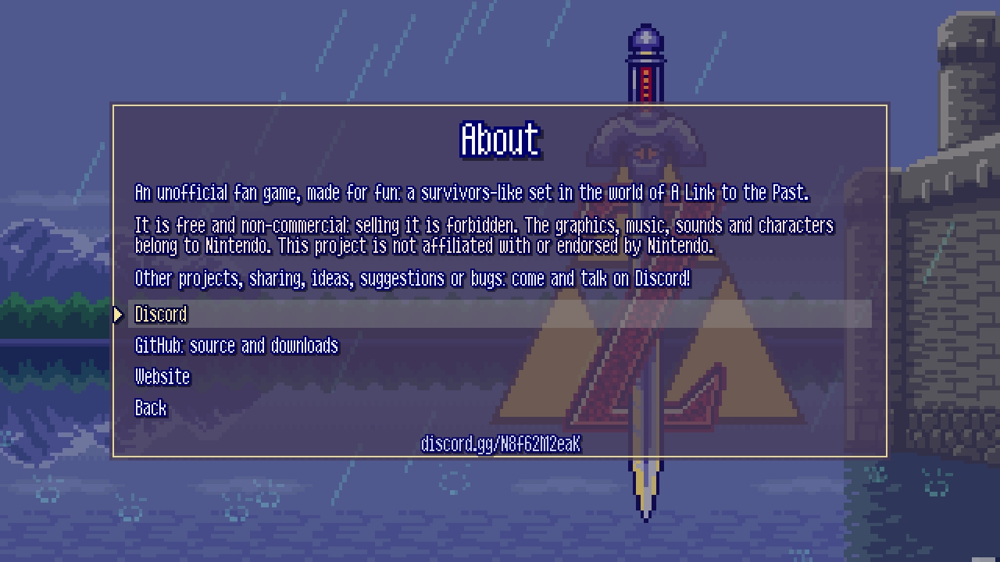
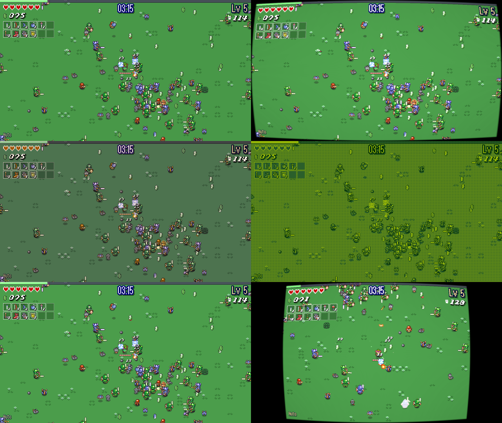
Weapons and evolutions
| Weapon | + Item (any level) | Evolution (weapon at max level) |
|---|---|---|
| Fighter's Sword | Heart Container | Master Sword |
| Bow | Quiver | Silver Arrows |
| Boomerang | Pegasus Boots | Magical Boomerang |
| Fire Rod | Lamp | Bombos Medallion |
| Ice Rod | Half Magic | Ether Medallion |
| Magic Hammer | Power Glove | Quake Medallion |
| Bombs | Mirror Shield | Super Bomb |
| Cane of Byrna | Bug-Catching Net | Fairy Ring |
| Hookshot | Zora's Flippers | Longshot |
| Magic Powder | Mushroom | Witch's Powder |
| Cane of Somaria | Book of Mudora | Great Somaria |
| Bees | Magic Cape | Golden Bees |
Controls
| Action | Keyboard / mouse | Gamepad |
|---|---|---|
| Move | WASD / arrows | Left stick / D-pad |
| Attack (manual mode) | J / left click | X / right trigger |
| Dash | Space / right click | A / left trigger |
| Auto or manual attack | Tab / R | Y |
| Pause | Esc / P | Start |
| Fullscreen · info · screenshot | F11 · F3 · F12 |
Play
The game is in early alpha (version 0.5.0). Windows: download the latest version from the Releases page, extract the whole zip and launch A Survivor to the Past.exe. Windows may warn that the game is not signed: click More info → Run anyway. The game then updates itself: at launch it checks GitHub for a new version, downloads it in the background and installs it at the next launch (Options → Updates: Automatic / Ask me / Off). Your settings are kept, and only GitHub is contacted, without any personal data.
Roadmap
- Real hand-made maps and more playable characters
- Online leaderboard for each stage, with a nickname of your choice
- More bosses with their own attacks and animations
- Touch controls for phones and tablets
- Builds for Linux, macOS and Android
Community
This is a project made for fun. For other projects, sharing, ideas, suggestions or bug reports, come and talk on Discord.